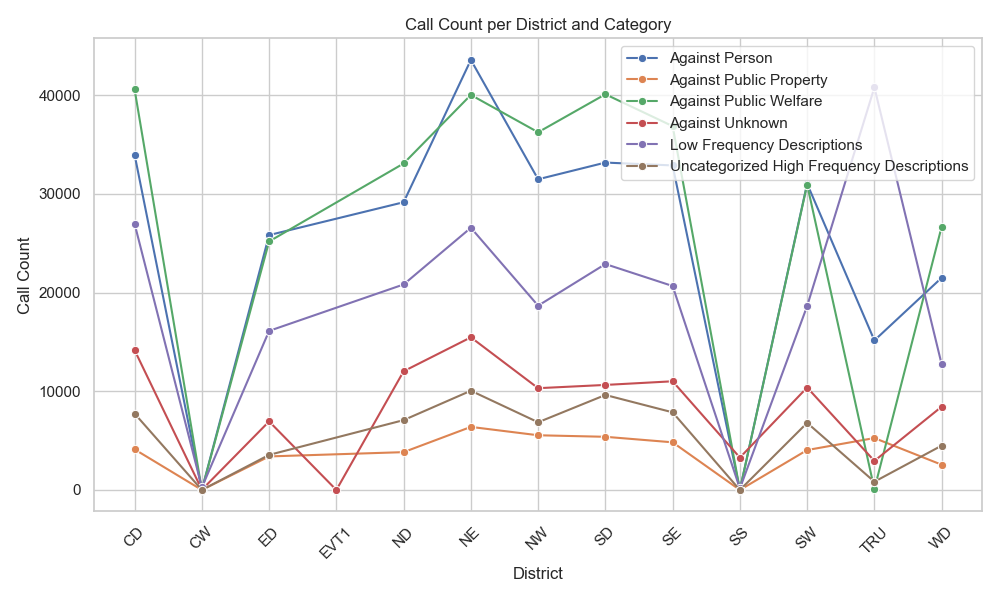
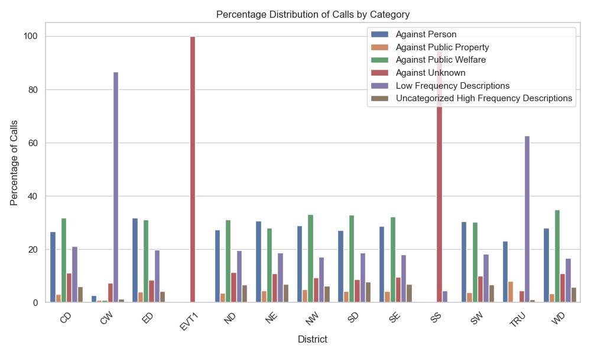
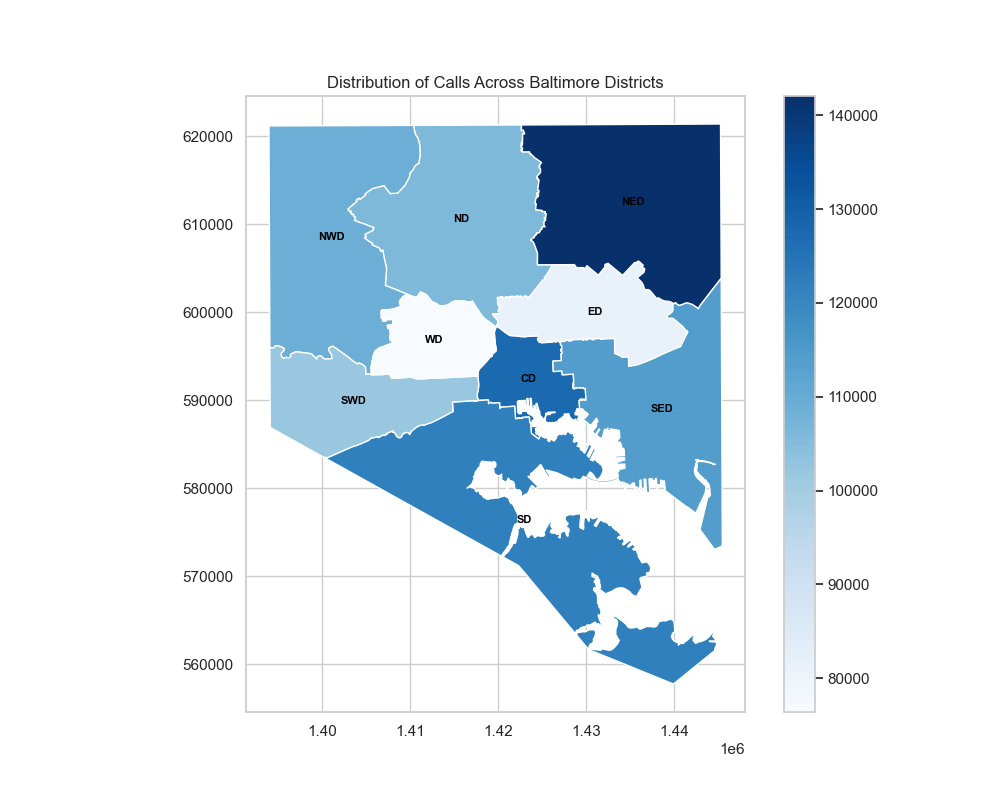

Hypothesis 3: Distribution of Calls by District in Baltimore
Author: Eliane
Date: October 9, 2024
Introduction
Using the 911 Calls dataset available on Kaggle, an analysis and data processing were conducted to understand the distribution of emergency calls across Baltimore’s districts. Before starting the analyses, the hypothesis was raised that the distribution of calls by category is significantly disproportionate among the districts. Thus, the objective will be to verify this hypothesis.
Brief Explanation of the Processing
To begin the analysis, unnecessary columns were removed, leaving only the columns ‘recordId’, ‘district’, and ‘description’. Using the function from the auxiliary file ‘save_top_description’, the 50 most frequent descriptions were saved as ‘Top_50_Descriptions.csv’ to facilitate the recategorization performed by the ‘calls_eliane’ module. Then, the most frequent descriptions in Baltimore were recategorized into crimes classified as ‘Against Person’, ‘Against Public Property’, ‘Against Public Welfare’, ‘Against Unknown’, ‘Uncategorized High Frequency Descriptions’, and ‘Low Frequency Descriptions’.
From this, the calls were grouped by the districts ‘CD’, ‘ED’, ‘ND’, ‘NE’, ‘NW’, ‘SE’, ‘SD’, ‘SW’, and ‘WD’, as well as by the following government divisions ‘CW’, ‘EVT1’, ‘SS’, and ‘TRU’, which are not linked to geographical divisions but will also be analyzed and compared with the official divisions. Additionally, the percentage corresponding to each category relative to each district was calculated and saved as a CSV file: ‘Call_Distribution_Percentage.csv’.
Note: The code blocks will not be included here as they are somewhat complex to extract outside the context of each module. It is advisable to read the documentation provided for each function for a better understanding of the work done. Recommended reading sequence: calls_eliane; auxiliary_eliane; visual_eliane.
Data Visualization
Line Chart
The following line chart of the distribution of calls by districts was generated using the ‘line_chart_district_calls’ function from the ‘visual_eliane’ module:
Analyzing the chart, it is evident that the ‘NE’ district has a high number of emergency calls across all categories compared to the other districts. Interestingly, one of the government divisions that are not geographical, ‘TRU’ (Tactical Response Unit), does not have a high number of calls among the 50 most frequent, but there is a significant number of calls due to crimes that occur rarely. ‘EVT1’, which includes calls for events occurring in the city, has slightly more calls than some official geographical regions. Additionally, both ‘SS’ (specialized services) and ‘CW’ (not limited to a specific district) have a low number of calls, as these divisions are not serving a specific population. Thus, it is observed that the analysis of the chart supports the initial hypothesis of the poor distribution of emergency calls in Baltimore.
Bar Chart
The bar chart showing the percentage distribution of each category by district was generated using the ‘bar_chart_distribution_percentage’ function from the ‘visual_eliane’ module:
This chart allows for the examination of the distribution of categories in a specific district. ‘SS’ and ‘EVT1’, mentioned previously, have a higher percentage of crimes classified as ‘Against Unknown’, while ‘CW’ and ‘TRU’ have a higher percentage of ‘Low Frequency Descriptions’, which was already concluded from the line chart but is now even more evident with the isolation of each district. In the official regions, the highest percentages are for crimes ‘Against Person’ and ‘Against Public Welfare’, something that could be deduced as “natural” in any city.
Map of Baltimore
To conclude the visual analysis, the following map of Baltimore summarizes what has been briefly discussed regarding the distribution of emergency calls:
The districts with darker colors have a higher number of calls, while the lighter ones have a lower number. For the creation of this map, the file ‘Police_Distritos_2023.zip’ was used, which contains important information for map creation, such as the longitude and latitude of each district. Some district abbreviations differ slightly from those used in the data, but it is easy to make the correspondence, as the first two letters are the same as those mentioned in this document. The ‘Police_Distritos_2023.zip’ file was made available by the government of Baltimore on the website: Baltimore Government.
{kind=link}
{kind=link}
{kind=link}
Conclusion
In conclusion, the work conducted revealed aspects that positively contribute to the hypothesis, and the assumption made can be confirmed if only the analysis conducted is considered. However, it should be clear that one cannot arrive at 100% correct conclusions about the data, as there may be external factors that somehow influence the distribution of emergency calls in Baltimore, which are not covered by the dataset used for this research, such as the population density of each district or the effectiveness of policing in the area. For more information about the distribution of 911 calls in Baltimore or other interesting characteristics, please visit the government website mentioned earlier.